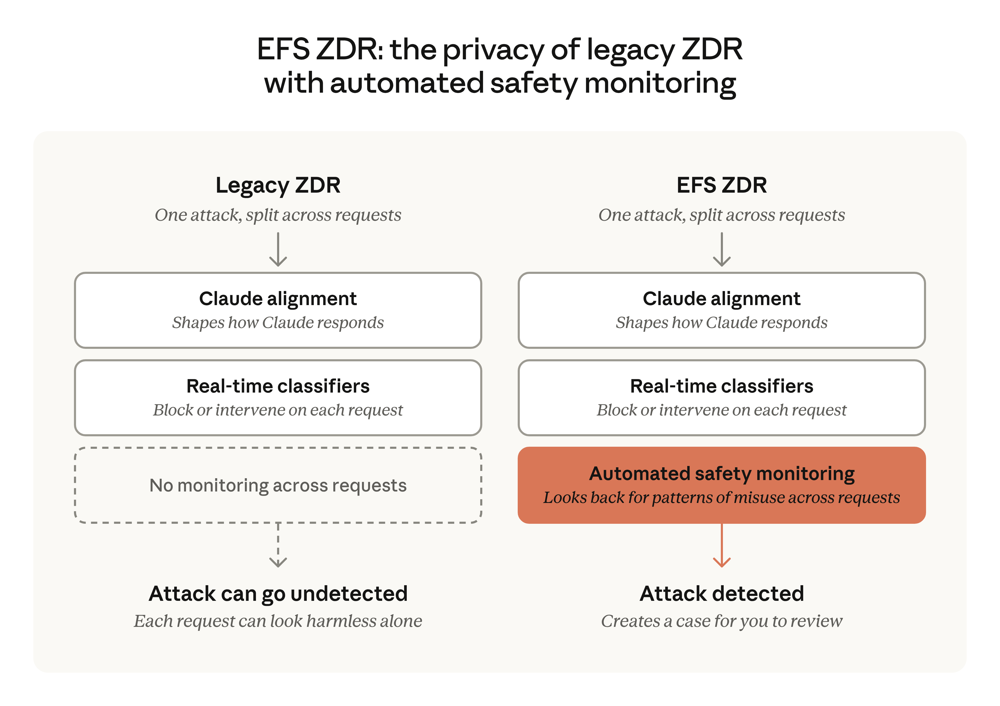
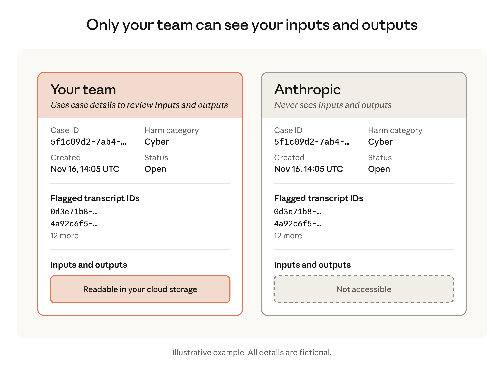
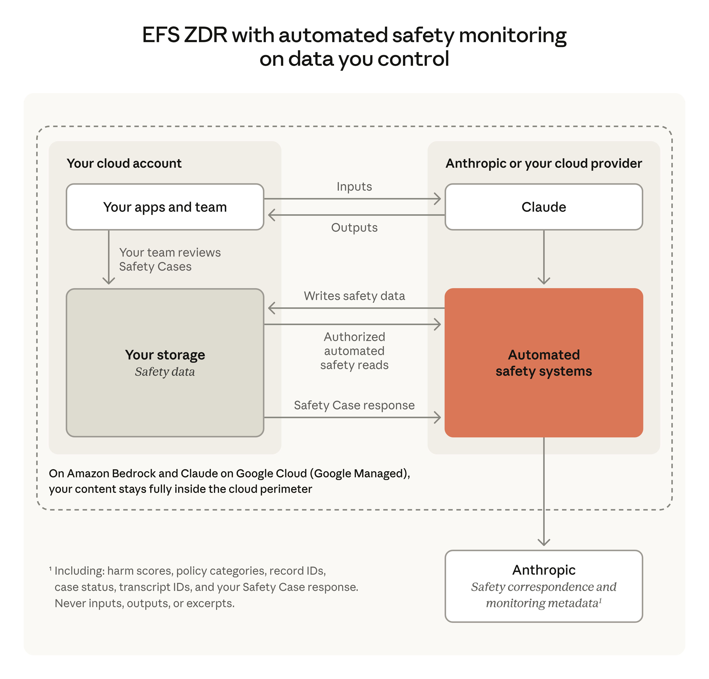

지난 몇 달 동안 우리는 비즈니스 고객을 위해 Enterprise Frontier Safeguards(EFS)를 개발해 왔습니다. EFS는 정교한 오용을 최첨단 수준으로 탐지하면서도 제로 데이터 보존(zero data retention, ZDR)과 호환됩니다. 즉, Anthropic도 어떤 클라우드 제공업체도 기업의 데이터를 보존하지 않습니다.
9월에 EFS를 발표한 뒤로, 우리는 100곳이 넘는 고객과 함께 EFS를 더 발전시켜 왔습니다. 여기에는 Fortune 100 기업의 4분의 1과, 데이터 가시성에 관한 규정이 엄격한 산업(의료, 금융 서비스, 법률 등)의 여러 기업이 포함됩니다. Bridgewater, Salesforce, Stripe 같은 선도 기업들이 비공개 베타에서 EFS를 평가해 왔습니다.
“핵심 인프라를 운영하는 회사로서, 우리에게 안전은 모델의 역량만큼이나 중요합니다. 우리에게는 강력한 안전장치를 제공하면서도 데이터를 우리 자체 계정에 보관할 수 있게 해 주는 솔루션이 필요합니다. Enterprise Frontier Safeguards는 바로 그것을 제공합니다.”
Noopur Davis, 수석 부사장(EVP), 최고 정보보안 및 제품 개인정보 책임자
“Stripe에서 고객 데이터를 보호하는 일은 우리가 일하는 방식의 토대입니다. Anthropic의 Enterprise Frontier Safeguards 덕분에 우리는 오용에 대한 추가 보호를 받으면서 프런티어 모델을 쓸 수 있게 될 것입니다. 또한 대화 로그를 Stripe의 AWS 환경에 보존하고, 접근과 검토는 Stripe의 보안 통제에 따라 관리할 수 있게 됩니다.”
Matthew Kemelhar, 보안 책임자
“EFS를 쓰면 고객은 민감한 데이터를 자체 환경에 두고 자체 암호화 키로 보호하면서도, 프런티어 역량에 필요한 전문화된 안전 메커니즘을 그대로 유지할 수 있습니다. 프런티어 모델의 안전을 포기하지 않으면서 기업이 자기 데이터를 통제하게 하는 그 균형은, Cisco처럼 보안에 민감한 조직에서 고급 AI가 더 널리 도입되는 데 매우 중요합니다.”
Omar Santos, 디스팅귀시드 엔지니어(Distinguished Engineer)
“Enterprise Frontier Safeguards는 우리가 요청한 것을 정확히 제공합니다. 우리 로그는 Wells가 관리하는 키로, Wells가 관리하는 환경에 머뭅니다. 우리는 데이터의 보관 권한을 유지하고, Anthropic은 탐지를 운영합니다. 바로 이 분리 덕분에 우리 팀들이 프런티어 모델을 안전하게 활용하고, 고객·직원·규제 당국에 대한 의무를 다할 수 있습니다. 우리 업계에 이런 안전장치가 필요하기 때문에 우리는 그 설계에 힘을 보탰습니다.”
Munish Kumar Sharma, 최고 정보보안 책임자(CISO)
“규제 대상이거나 매우 민감한 데이터를 다루는 곳에서, 제로 데이터 보존과 함께하는 Enterprise Frontier Safeguards가 있으면 규제가 엄격하고 민감한 고객 업무 전반에 걸쳐 AI 도입을 자신 있게 가속할 수 있을 것입니다.”
Todd Lohr, 미국 부회장 겸 고객 기술·혁신 책임자
이제 EFS를 공개 베타로 엽니다. 이 글에서는 EFS가 어떻게 작동하는지, 어떻게 ZDR과 호환되는지, 그리고 기업이 베타 프로그램에 어떻게 참여할 수 있는지 더 자세히 설명합니다.
기존(legacy) ZDR을 쓰는 고객은 Claude의 분류기로 보호받습니다. 분류기는 개별 요청이 해를 끼칠 수 있는지 판단하기 위해 요청을 하나씩 걸러 내는 실시간 안전장치입니다. 하지만 정교한 공격은 대개 여러 쿼리에 걸쳐 일어나며, 어떤 단일 요청도 따로 떼어 보면 무해해 보일 수 있습니다.
예를 들어, 우리의 9월 위협 인텔리전스 보고서는 약 50개 조직을 겨냥한 작전을 다룹니다. 이 작전에서 한 AI 에이전트는 공격 작업을 병렬로 실행되는 다른 여러 에이전트에게 나눠 맡겼습니다. 그 에이전트는 세션 사이에 수집한 자격 증명을 저장해 두어, 공격자들이 쉽게 공격을 재개할 수 있게 했습니다. 요청을 하나씩 보면, 이 공격은 서로 별개인, 더 무해한 작업들로 보였을 것입니다.
이런 공격을 잡아내기 위해, 우리는 자동 안전 모니터링(automated safety monitoring)이라는 두 번째 방어 계층을 씁니다. 이 계층은 많은 요청에 걸친 오용 패턴을 찾습니다. EFS를 통해 Anthropic은 고객 데이터를 전혀 저장하지 않고도 자동 안전 모니터링을 제공할 수 있습니다. 대신 우리의 자동 안전 모니터링 시스템은 전적으로 고객이 통제하는 인프라에 저장된 데이터를 분석합니다.

자동 안전 모니터링이 위험을 발견하면, 고객이 검토할 안전 케이스(Safety Case)를 만듭니다. 이 케이스는 고객의 클라우드 스토리지에서 읽거나 API로 조회할 수 있고, 보안 정보 및 이벤트 관리(SIEM) 시스템과 연동할 수 있습니다. 케이스에는 입력과 출력이 포함되지 않습니다.

일단 설정되면, 자동 안전 모니터링은 심각한 피해로 이어질 수 있는 의도적 오용(예: 공격적 사이버 작전)을 팀이 탐지하도록 도울 수 있습니다. 또한 사용자의 의도를 넘어서는 행동을 하는 에이전트를 탐지하는 데도 도움이 됩니다. 극단적인 경우, 소프트웨어 익스플로잇을 사용해 내부 데이터베이스나 외부 시스템에 접근하는 경우가 그 예입니다.
EFS에서는 입력과 출력을 저장할 스토리지를 고객이 직접 가져옵니다(bring your own storage). 데이터가 고객이 통제하는 스토리지로 전달되고 나면, Anthropic도 고객의 클라우드 제공업체도 그 사본을 갖고 있지 않습니다. 이로써 다음을 보장합니다.

EFS는 Claude Platform, Claude Platform on AWS, Amazon Bedrock, Claude on Google Cloud를 통해 쓸 수 있습니다. Amazon Bedrock이나 Claude on Google Cloud(Google Managed)를 통해 EFS를 쓰면, EFS는 해당 클라우드 제공업체가 운영하며 처음부터 끝까지의 데이터 흐름이 그 클라우드의 경계 안에 머뭅니다.
Claude를 어디서 쓰느냐에 따라, 고객 자체 계정의 Amazon S3나 Google Cloud Storage를 스토리지로 쓸 수 있습니다. 해당 스토리지 비용은 평소처럼 클라우드 제공업체가 청구하며, 여기에는 읽기·쓰기·키 작업(그리고 해당하는 경우 네트워크 전송)이 포함됩니다.
EFS는 Claude Platform, Claude Platform on AWS, Amazon Bedrock, Claude on Google Cloud에서 사용할 수 있습니다. Microsoft Foundry에서의 EFS 지원도 곧 제공됩니다.
자격을 갖춘 고객에게는 시작 방법에 관한 안내가 통지됩니다. 설정 방법은 개발자 문서에서, 아키텍처가 작동하는 방식은 보안 백서에서 확인하세요. 또는 Accenture, Deloitte, KPMG, PwC 같은 컨설팅 파트너를 통해 배포할 수도 있습니다.